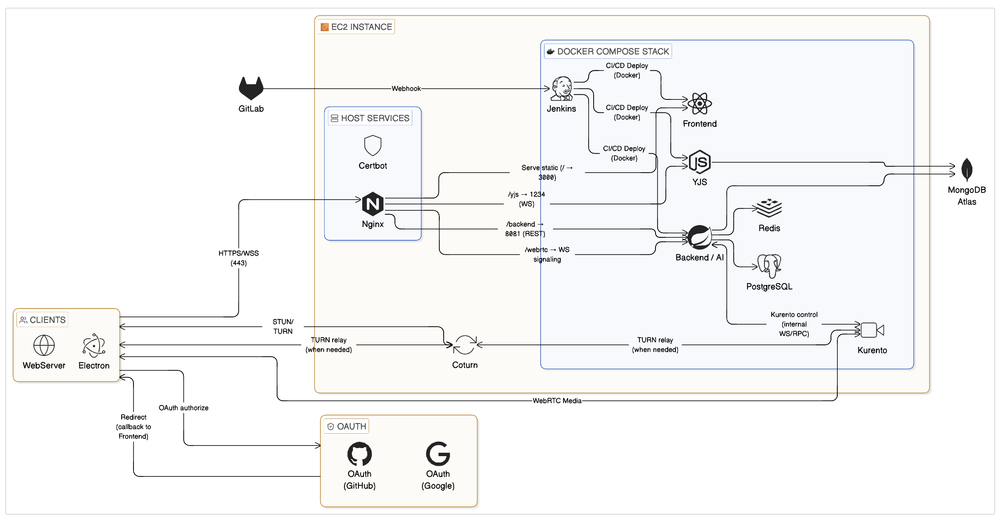

SYNAPSE
코드 실행 환경과 실시간 편집
여러 사용자가 문서를 동시에 편집하고 코드 셀을 실행하는 데스크톱 협업 노트입니다. 저는 팀장으로서 코드 실행 환경과 블록 저장 구조를 맡았습니다.
Yjs 실시간 동기화의 서버와 토큰 발급은 다른 팀원 영역이고, 저는 클라이언트 측 수정을 맡았습니다.

docs/images/architecture.png, 팀 공동 작성). 이 중 Backend의 코드 블록 저장과 Electron 클라이언트의 코드 실행 경로가 제 담당입니다.코드 실행 격리 단위 변경: 세션 단위 컨테이너 재사용
문제
사용자가 작성한 코드를 그대로 실행하는 기능이라 초기 설계의 전제는 "실행 단위로 완전히 격리해야 한다"였습니다. 블록을 실행할 때마다 임시 파일을 만들고 docker run --rm으로 새 컨테이너를 띄운 뒤 종료·삭제했습니다.
그 격리 비용은 두 갈래로 돌아왔습니다. 실행마다 컨테이너 기동·정리 시간이 그대로 지연에 얹혔고, 동시에 뜨는 컨테이너 수만큼 리소스 부담도 커졌습니다.
해결
격리 단위를 실행에서 세션으로 낮췄습니다. 처음에 완전 격리를 전제로 설계한 것도, 지연과 리소스 부담을 보고 세션 재사용으로 전환하기로 한 것도 제 판단입니다. 팀장으로서 이 전환을 말로 설득하는 대신 세션 재사용 프로토타입을 먼저 구현해 처리 속도 차이를 보여주고 팀의 동의를 얻었습니다.
세션 키를 noteId:language로 두고 docker run -d -i로 REPL 컨테이너를 유지한 뒤 docker attach로 stdin에 코드를 넣었습니다. 실행 종료 판정은 실행마다 고유한 endMarker를 코드 뒤에 출력시키고 50ms 폴링으로 검출하는 방식을 골랐습니다. 지연 하한이 생기는 대신 언어별 REPL 프롬프트 처리에 의존하지 않습니다. 출력이 뒤섞이지 않도록 세션별 실행 큐로 직렬화했고, REPL 구조와 맞지 않는 Java는 단일 실행 모드로 폴백합니다.
대가
같은 세션 안에서는 블록 간 상태가 공유되므로 격리를 일부 포기합니다. 긴 블록이 뒤를 막는 것도 실행 큐의 대가입니다.
결과와 배운 점
두 번째 실행부터 컨테이너 기동·정리 비용이 사라졌습니다. 대신 세션을 처음 여는 실행에는 컨테이너 기동과 attach 후 고정 1초 대기가 코드상 그대로 남아 있어, 이 결정의 이득은 한 노트에서 같은 언어를 여러 번 실행하는 패턴에서만 나옵니다. 수치는 프로젝트 종료 후 측정한 것이라 아래에 따로 적었습니다.
재사용 최적화에는 손익분기가 있습니다. "평균이 빨라졌다"가 아니라 "어떤 사용 패턴에서 이득인가"로 말해야 한다는 것이 이 작업의 결론입니다. 재작성 과정에서 유휴 정리 기준이 마지막 사용이 아니라 세션 생성 시점이 된 것으로 코드상 보이지만 재현은 하지 않았습니다.
도입 직전 커밋과 현재 코드를 각각 체크아웃해 다시 측정했습니다.
| 구분 | python | javascript |
|---|---|---|
| 도입 전: 단일 실행 | 359.5ms | 385.1ms |
| 세션 warm | 151.8ms | 161.7ms |
| 세션 cold (첫 실행) | 약 1.5초 | 약 1.5초 |
- 조건
- Windows 11 / i5-12400 / Docker Desktop. 실행 코드가
print(1+1)수준이라 컨테이너 오버헤드의 하한값입니다. 도입 전 n=60, 세션 warm n=30, 이미지 사전 pull(시간 제외), 실패 0건. 세션 warm에는 도입 전에는 없던 이미지 확인 호출(약 90ms)이 포함되며, 이는 차이를 줄이는 방향입니다. - 범위
- 세션 cold는 언어별 1회 측정이라 통계적으로 약해 소수점을 쓰지 않았습니다. 단일 실행보다 느립니다.
이 기능은 주피터 노트북의 코드 셀처럼, 한 노트에서 같은 언어의 코드를 여러 번 실행하는 사용 패턴을 전제로 설계했습니다. 누적 시간으로 계산하면 도입 전 단일 실행 기준으로 7번째 실행부터 이득이 나기 시작합니다.
표로 보기
| 실행 횟수 | 세션 재사용 | 단일: 도입 전 | 단일: 현재 |
|---|---|---|---|
| 1 | 1,474.0ms | 359.5ms | 503ms |
| 2 | 1,625.8ms | 719.0ms | 1,006ms |
| 3 | 1,777.6ms | 1,078.5ms | 1,509ms |
| 4 | 1,929.4ms | 1,438.0ms | 2,012ms |
| 5 | 2,081.2ms | 1,797.5ms | 2,515ms |
| 6 | 2,233.0ms | 2,157.0ms | 3,018ms |
| 7 | 2,384.8ms | 2,516.5ms | 3,521ms |
| 8 | 2,536.6ms | 2,876.0ms | 4,024ms |
| 9 | 2,688.4ms | 3,235.5ms | 4,527ms |
| 10 | 2,840.2ms | 3,595.0ms | 5,030ms |
Yjs 피드백 루프 차단과 블록 이력 모델링
팀이 구현한 Yjs 실시간 동기화에서 외부 값을 반영하면 그 반영이 다시 변경 이벤트를 일으켜 돌아오는 피드백 루프가 있었습니다. programmatic dispatch 구간에서 이 루프를 차단하도록 클라이언트 측을 수정했습니다. 블록 이력은 MongoDB 문서로 모델링해 (블록, 슬롯) 유니크 인덱스를 정의했습니다.
블록 저장소를 PostgreSQL + MongoDB에서 PostgreSQL 하나로 합쳐도 되는지 PoC로 확인했습니다. 저장소 접근을 인터페이스 뒤로 분리하고 PG JSONB 어댑터를 붙여, 같은 데이터와 시나리오로 세 구성을 비교했습니다.
| 구성 | 조회 후 전체 저장 | 부분 갱신 |
|---|---|---|
| 현행: Mongo | 16.8ms | 4.3ms |
| PG: 이력을 JSONB 배열로 | 36.0ms | 25.6ms |
| PG: 이력 테이블 분리 | 1.3ms | 1.3ms |
- 조건
- 시나리오 M(100노트 × 500블록). JSONB 배열 구성은 이력 길이에 비례해 느려졌고(500건 4.87ms, 2,000건 18.04ms, 5,000건 36.01ms), 이력 분리 구성은 1.07~1.32ms로 일정했습니다. 이력 0건에서는 세 구성 모두 1.1~1.4ms로 차이가 없었습니다.
- 범위
- Node 클라이언트와 Docker Desktop 환경 값이라 Java 서비스의 절대값이 아닙니다. 현행 3DB에서 이력만 분리하는 비교군은 시험하지 않았습니다.
결론은 "PG 하나로 가능, 단 이력 분리가 조건"입니다. 반대 결과도 있었습니다. 단건 속성 갱신은 노트당 5,000블록 시나리오에서 Mongo가 0.35ms, PG가 0.88~1.69ms(이력 분리 / JSONB 배열 구성)로 Mongo가 빨랐습니다(절대 차이 약 1ms). 5,000건은 극단적인 길이이고 500건 미만에서는 차이가 수 ms 이내였습니다. 이력 분리 구성과 Yjs 서버의 영속 계층 이전은 구현하지 않고 벤치로만 확인했으며, 이전을 결정하기 전에 Java 하네스로 재측정해야 합니다.